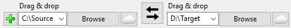
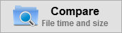
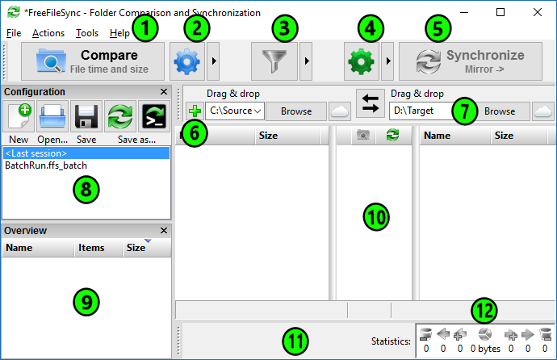

Folder Comparison and Synchronization
Basic usage:
- Choose left and right folders.

- Compare them.

- Select synchronization settings.
- Press Synchronize to begin synchronization.
Main Dialog Overview

- Start comparison
- Change comparison settings
- Include/exclude specific files
- Change synchronization settings
- Start synchronization
- Add folder pairs
- Select left and right folders
- Save/load configuration
- Tree overview panel
- Synchronization preview
- Select categories to show on grid
- Synchronization statistics